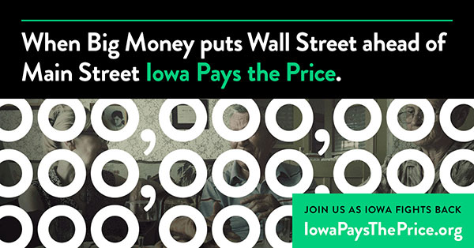
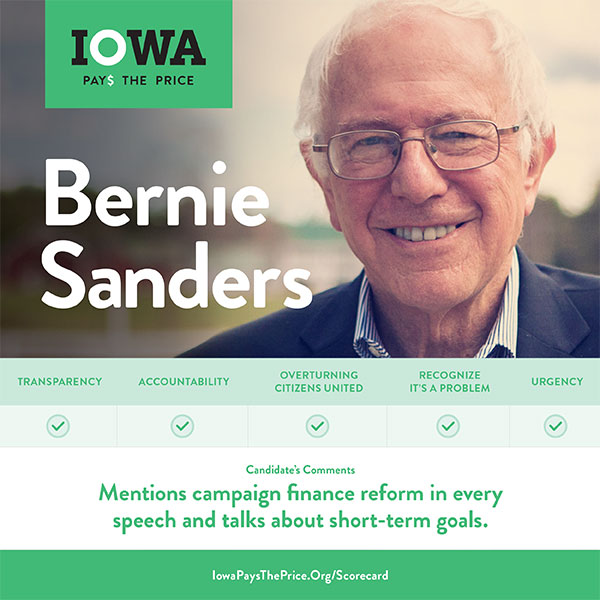

As presidential candidates descended on Iowa, this non-partisan group raised awareness of how big money undermines our political process.
Learn MoreEvery four years, Iowa becomes the center of the political universe in a unique spectacle called the Iowa caucuses. But the folksy, diner tours of past where front-runners and dark horses mingled with farmers, teachers, and union workers are under threat as the lure of unlimited dark money contributions give deep-pocketed special interests more and more influence.
Iowa Pays the Price emerged as a non-partisan, grassroots voice to demand accountability from politicans and show that big money was often working against the issues important to everyday Iowans.
Iowa Pays the Price emerged as a non-partisan, grassroots voice to demand accountability from politicans and show that big money was often working against the issues important to everyday Iowans.
Founded just a few months before the election, Iowa Pays the Price needed to rely heavily on digital and social media to organize, engage and raise awareness of a critical campaign issue.
We needed a consistent brand that could work across a wide variety of digital and print products -- from websites and display ads to t-shirts and placards. Our friends at Action Backed developed a number of concepts, but one idea clearly stood out. We wanted to show how everyday Iowans were losing their voice in the political process and a logo with dollars signs and zeros combined with traditional Iowa scenes obscured by the limitless zeroes of big money definitely drove home the concept.
Working with Action Backed, we created a WordPress site that could serve as a billboard for the organization and its mission. We used a compelling short video to quickly explain our mission and prominently featured a sign-up form to encourage people to join. We knew email would be important to this campaign so we put significant effort into list building through a series of acquisition ads. We launched Facebook, Twitter and YouTube accounts and used a variety of organic and paid promotion to help build a following.
We knew that there was no way we could match special interests' financing so we focused on building a grassroots campaign with strong volunteer efforts. We built advertising campaings to drive targeted audiences to content that featured authentic Iowa voices.
Our field staff traveled across Iowa to assess each candidate's position on commonsense campaign finance reform. Armed with smart phones, they traveled to town halls, county fairs, and soapbox tours to ask questions and get answers on video. Through these interviews and candidate's responses to a questionaire, we were able to let Iowans know where the candidates stood.
Right before the election we released a scorecard detailing each candidate's position on key aspects of limiting the influence of money on poltiics. We promoted the scorecard heavily through our digital channels and created individual share graphics targeted to supporters of different candidates that they could share online.
Ready to get to work? Let's start building a strategy to acheive your goals.
919.360.4800